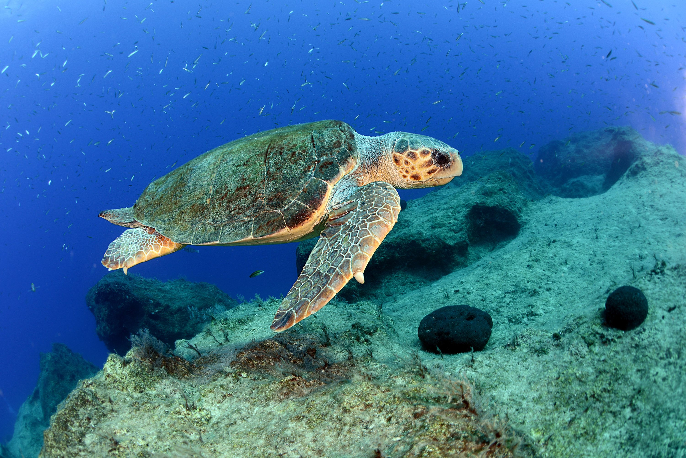
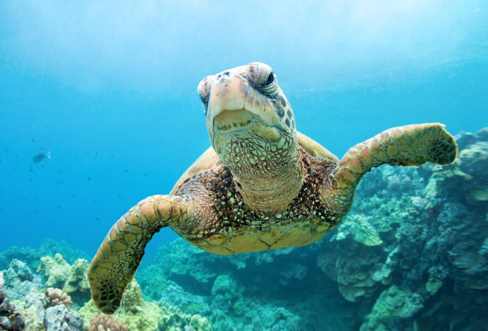

Loggerhead Turtle

Green Sea Turtle

Seven distinct sea turtle species, divided into six genera, are known to science. Each sea turtle has a common name as well as a scientific name. The popular name often defines a physical trait of the turtle's body, while the scientific name designates the genus and species. Different sea turtle species prefer to eat various foods. To enable them to eat the foods they enjoy, sea turtles have lips and jaws that have been uniquely shaped. Additionally, every species of sea turtle uses a particular habitat for eating, sleeping, mating, and swimming.
The loggerhead sea turtle is the most often observed of all the sea turtles that nest in the United States. The only sea turtle species not categorized as endangered is the loggerhead, which was listed as threatened under the Endangered Species Act in the United States in 1978. Populations of loggerhead turtles have been falling in Honduras, Mexico, Colombia, Israel, Turkey, Bahamas, Cuba, Greece, Japan, and Panama.
Despite being an endangered species everywhere in the globe, green turtles continue to breed in greater numbers along Florida's east coast. The green sea turtle was added to the Endangered Species Act's list of threatened species in the United States in 1978. In Tortuguero, Costa Rica, where STC has operated a research program since 1959, there is the largest nesting site in the Western Hemisphere.
Since 1967, there has been an 80% decrease in the nesting population in the western North Atlantic (Surinam and surrounding areas). Although Playa Nancite, Costa Rica, has similarly shown declines, other nesting populations throughout Mexico's and Costa Rica's Pacific coasts seem to be holding steady or even growing. With an average of 398,000 females nesting in a given year, Gahirmatha, which is located in the Bhitarkanika Wildlife Sanctuary, India, likely maintains the biggest nesting population in the Indian Ocean.
Hawksbills are primarily found in coral reefs in the tropical oceans of the world. They mostly eat sponges, which they pull from reef crevices using their tiny, pointed beaks, although they also consume sea anemones and jellyfish. The only surviving members of a group of reptiles that have roamed our oceans for the past 100 million years are sea turtles. They are an essential component of marine ecosystems and support the survival of seagrass meadows and coral reefs
The name "leatherback" refers to the leather-like, as opposed to a hard, like other turtles' shell, that this species of turtle has. They are the biggest species of sea turtle and among those that migrate the most, traveling across both the Atlantic and Pacific Oceans. Every summer and fall, Pacific leatherbacks travel from their nesting beaches in the Coral Triangle all the way to the California coast to dine on the profusion of jellyfish.
The Kemp's ridley sea turtle is regarded as the smallest and most endangered marine turtle in the world. The head and beak of the Kemp's ridley are triangular in shape and have huge crushing surfaces. In adults, the plastron (bottom shell) is a pale yellow to cream color, while the carapace (top shell) is roughly round and grayish green in color. Black covers both sides of the hatchlings.